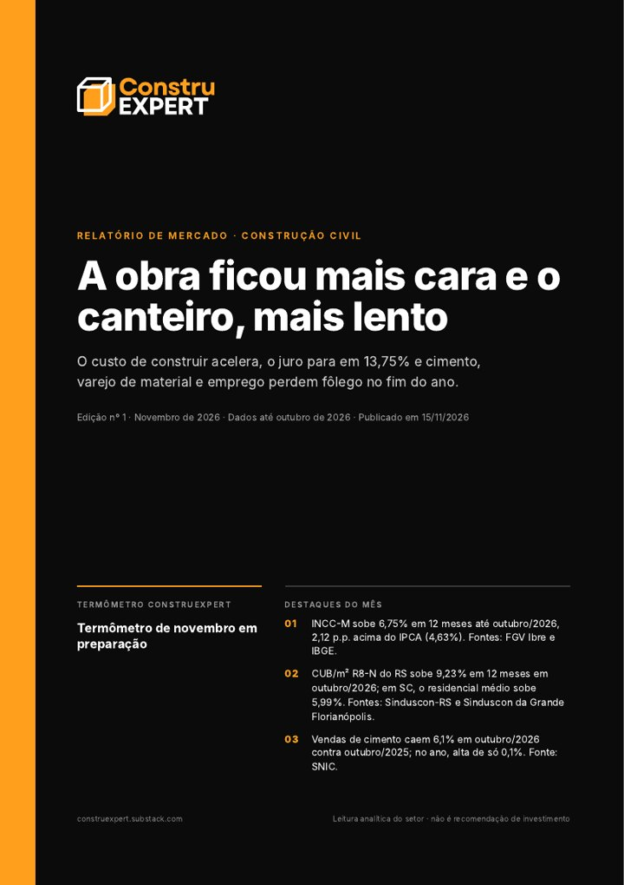
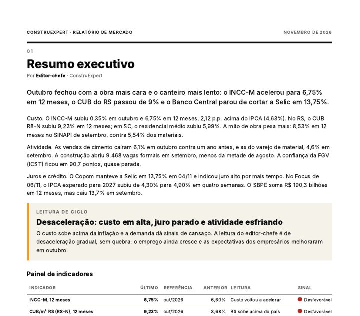
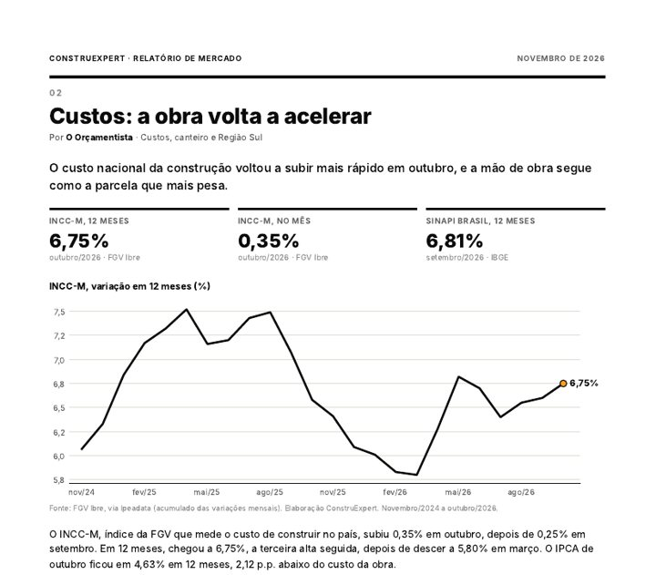

6,75%
INCC-M em 12 meses até outubro/2026, 2,12 p.p. acima do IPCA (4,63%).
FGV Ibre e IBGE
Relatório de Mercado ConstruExpert · Edição nº 1 · Novembro de 2026
O custo de construir acelera, o juro para em 13,75% e cimento, varejo de material e emprego perdem fôlego no fim do ano. Dados até outubro de 2026, em 9 páginas, com uma ação prática para cada público.
Cadastro gratuito na escola ConstruExpert, na Eduzz, com nome, e-mail e WhatsApp. O PDF completo fica disponível na escola depois do cadastro.

GrátisDestaques do mês
INCC-M em 12 meses até outubro/2026, 2,12 p.p. acima do IPCA (4,63%).
FGV Ibre e IBGE
CUB/m² R8-N do RS em 12 meses até outubro/2026. Em SC, o residencial médio subiu 5,99%.
Sinduscon-RS e Sinduscon da Grande Florianópolis
Vendas de cimento em outubro/2026 contra outubro/2025. No ano, a alta é de só 0,1%.
SNIC
O que tem dentro
Cada número com fonte oficial e mês de referência, gráficos de 24 meses e cenários sempre condicionais.


Prévia das páginas 2 e 3. O relatório completo fica disponível depois do cadastro gratuito.
Cadastre-se na escola ConstruExpert, na Eduzz, e baixe o PDF. Lá também estão os e-books gratuitos e os minicursos. Todo dia 15 sai uma edição nova.
Edições
Fabricantes, distribuidores e lojas: fale com a gente sobre patrocínio do relatório e das trilhas de conteúdo.
Perguntas